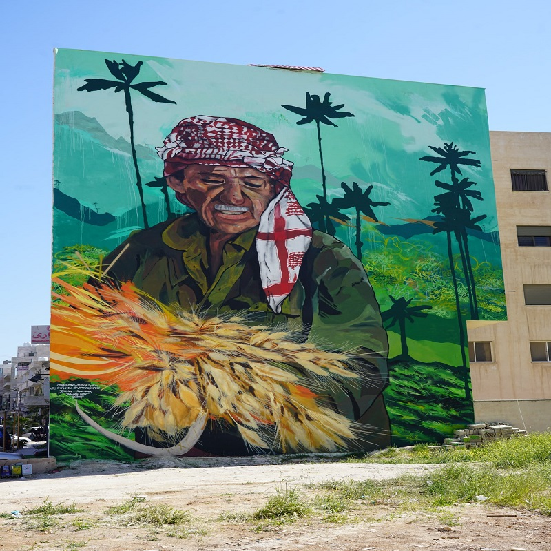
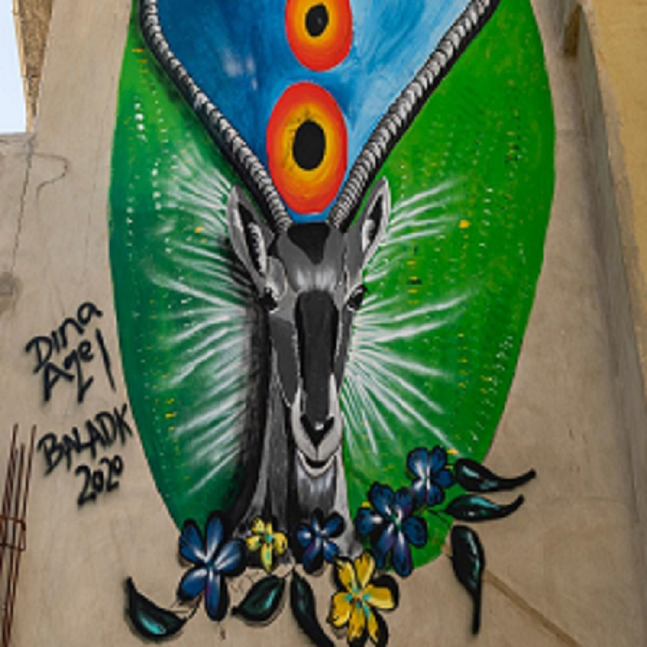
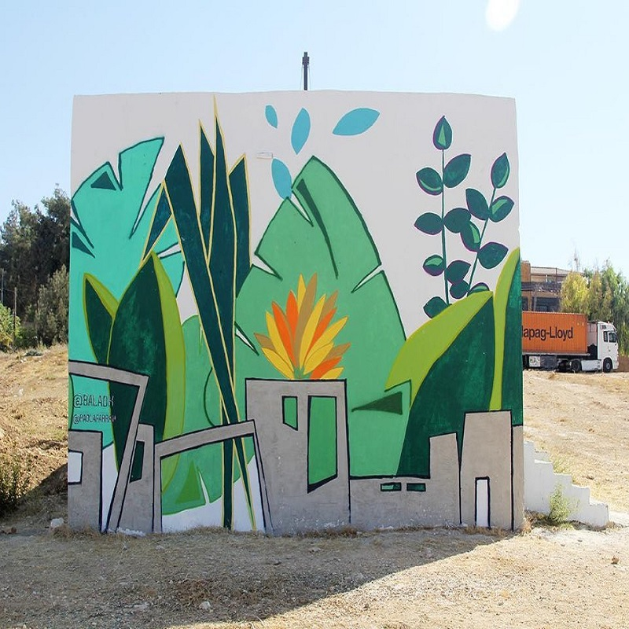
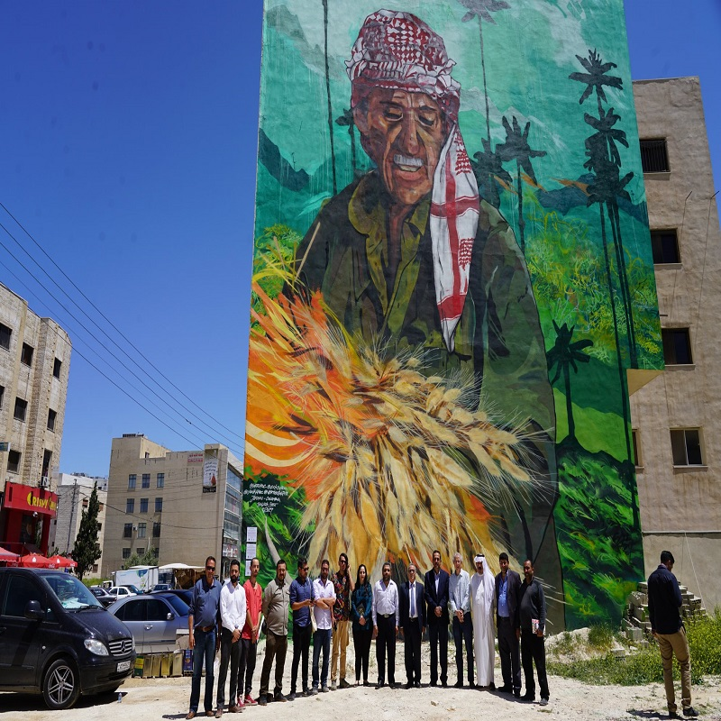

مهرجان بلدك
. مهرجان بلدك للفنون العمرانية وفنون الشارع هو مهرجان سنوي ينظمه ويصطفي أعماله مسرح البلد ويشكل تجمعا هاما وحيويا لفناني الجداريات المحليين والعالميين. يوفر بلدك منصة للفنانين المحترفين والناشئين للإبداع والتشبيك والتعلم ومشاركة خبراتهم الفنية. يستضيف المهرجان سنويا عددا من الفنانين العالميين المتخصصين في الجداريات من حول العالم ليعملوا سويا مع الفنانين الأردنيين للاحتفاء بالمباني والثقافات المتنوعة التي تحتويها مدينة عمان. يركز بلدك على الفنانين والأهالي الذين يعملون سويا في حارات عمان المتنوعة لتحويل الجدران البيضاء إلى متاحف ملونة مفتوحة أمام الجميع. وفي كل عام نركز على موضوع معين، وعلى مدار سبع دورات ناجحة حول مهرجان بلدك مدينة
|  |  |
|  |  |